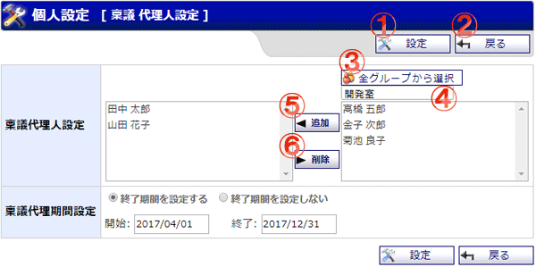

稟議の個人代理人設定を行う画面です。
自分の代わりに稟議の審議を行うことができるユーザを設定します。

機能説明
設定ボタン設定した内容で代理人設定を行い、完了画面へ遷移します。 |
戻るボタン遷移元の画面へ遷移します。 |
全グループから選択ボタンポップアップで全グループから選択画面が開きます。 |
グループコンボ選択したグループに所属するユーザがユーザ一覧に表示されます（既に選択済みのユーザは表示されません）。 |
追加ボタンユーザ一覧で選択されているユーザを、代理人に追加します。 |
削除ボタン稟議代理人設定で選択されているユーザを、代理人から除外します。 |
表示・入力項目説明
稟議代理人設定
自分の代理人となるユーザを選択します。
代理人ユーザは、自分の代わりに稟議の閲覧や審議、後閲指示などを行うことができます。ただし、稟議の申請や草稿の閲覧はできません。
稟議代理期間設定
設定した期間の間、稟議代理人設定で選択したユーザが自分の代理人となります。